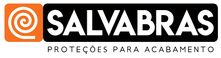
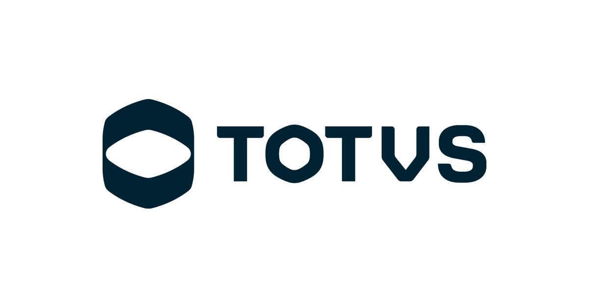
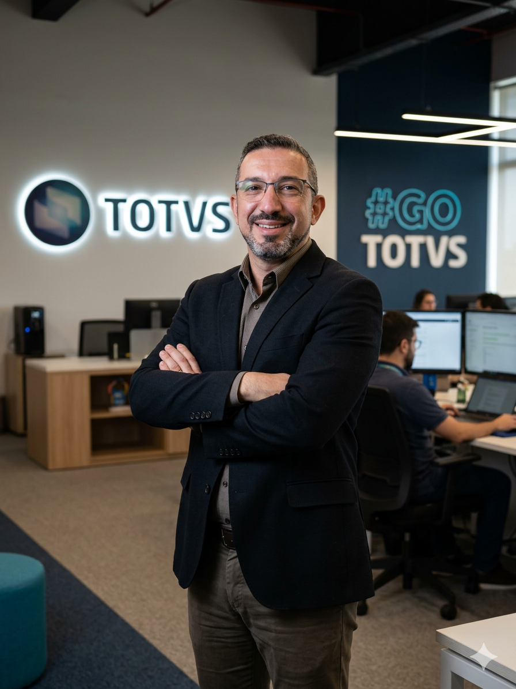

Apoiamos empresários a destravar gargalos operacionais, transformar o ERP (Totvs Protheus e outros) em uma máquina de eficiência e organizar a governança de TI — sem o custo e a lentidão de um diretor de tecnologia CLT.
Negócios, Governança & Sistemas
Alinhamos os módulos do ERP (Protheus) ao fluxo real de compras, estoque e vendas da sua empresa.
Relatórios confiáveis e conciliação em tempo real. Fim das planilhas paralelas e da surpresa no fim do mês.
Assumimos a interlocução com fornecedores de software, infraestrutura e segurança para proteger seu tempo.
Precisa de clareza sobre o estado atual da sua tecnologia?
Falar com Rodrigo MartinsExperiência comprovada em empresas com operações complexas e exigentes


Ecossistema ProtheusNa maioria das pequenas e médias empresas, o cenário é sempre o mesmo: sistemas caros que ninguém usa direito e a sensação constante de insegurança operacional.
Você investiu uma fortuna em implantação ou licenças do Protheus, mas a equipe ainda depende de dezenas de planilhas de Excel paralelas para trabalhar.
Você abre chamados, paga pacotes de horas caros, e os técnicos resolvem o sintoma imediato mas nunca a causa raiz do seu fluxo de negócio.
O fechamento contábil e fiscal é demorado, o estoque real nunca bate com o sistema e a diretoria não tem números transparentes de margem e lucratividade.
Como a empresa não tem um Diretor de TI interno, o próprio dono ou diretor financeiro gasta tempo precioso cobrando técnicos e mediando fornecedores.
O que sua empresa precisa é de alguém que entenda o fluxo do seu negócio (compras, estoque, chão de fábrica, fiscal e finanças) e configure a tecnologia para trabalhar a seu favor, com governança e prestação de contas.
Veja a diferença prática entre contratar alguém que apenas digita código e ter um verdadeiro parceiro à mesa da sua diretoria.
O modelo antigo que gera dependência
Gestão integrada orientada a lucro e eficiência
Atuamos em quatro frentes coordenadas para que a tecnologia seja a alavanca de crescimento da sua empresa, nunca o obstáculo.
O Protheus é poderoso, mas se mal configurado vira uma âncora pesada. Nós saneamos a base de dados, destravamos rotinas e alinhamos o sistema aos seus processos reais.
Tenha a liderança de um Diretor de Tecnologia experiente para estruturar sua empresa, sem precisar contratar um executivo de 25 a 40 mil reais por mês.
Elimine a digitação duplicada entre setores. Conectamos seu ERP a canais de vendas, bancos, transportadoras, CRMs e plataformas de e-commerce.
Tenha os números vitais da sua empresa na tela do seu computador ou celular, sem precisar pedir planilhas para a equipe toda semana.
Sem diagnósticos intermináveis que nunca saem do papel. Entregamos clareza e resultados táticos rápidos.
Uma conversa objetiva com a diretoria para mapear os 3 principais gargalos operacionais e sistêmicos que estão drenando tempo e dinheiro.
Apresentamos um roteiro prioritário: vitórias rápidas para estancar erros imediatos e o plano de estruturação definitivo para o ERP.
Mão na massa técnica no sistema, alinhamento com usuários-chave e simplificação de processos para que a equipe realmente utilize a solução.
Atuação contínua como braço direito tecnológico, garantindo que o crescimento da empresa ocorra sem gargalos e com segurança.

Meu nome é Rodrigo Martins da Silva, fundador da INNOVY. Ao longo de mais de 15 anos no ecossistema de gestão empresarial e ERPs (especialmente TOTVS Protheus), vi centenas de empresários frustrados por terem investido fortunas em tecnologia sem receber o retorno esperado.
A razão é simples: consultorias tradicionais olham apenas para linhas de código e horas faturadas. Elas não conhecem a dor de fechar a folha, de ter um caminhão parado por nota fiscal travada ou de tomar uma decisão de compra sem saber o estoque real.
Criei a INNOVY para ser o parceiro de negócio e tecnologia que eu sempre achei que as PMEs mereciam: alguém que senta à mesa da diretoria para discutir estratégia, e depois assume a rédea técnica para garantir que os sistemas trabalhem para a empresa lucrar e crescer com tranquilidade.
Fundador & Diretor de Tecnologia e Processos
rodrigo.martins@innovy.com.br
Selecione suas respostas abaixo para receber uma orientação direta e personalizada.
Resposta rápida e direta. Sem robôs, você falará diretamente com o especialista.
Transparência total sobre como atuamos no dia a dia da sua empresa.
Agende uma conversa estratégica de 30 minutos sem nenhum custo. Vamos analisar sua operação atual e mostrar como destravar seu ERP e sua gestão.